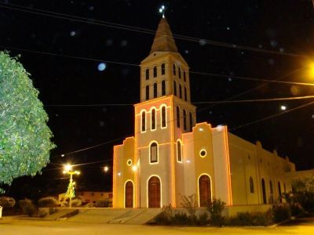

Informações técnicas sobre relevo, população, IDH etc.
| INFORMAÇÕES | |
|---|---|
| Municípios limítrofes | Norte: Quixeramobim e Banabuiú, Leste: Solonópole, Sul: Deputado Irapuan Pinheiro, Oeste: Senador Pompeu. |
| Fundação | 5 de fevereiro de 1985 (36 anos) |
| Área total | 502,036 km² |
| Clima | Semi-árido |
| IDH | 0,632 — médio |
| PIB | R$ 53 615,165 mil |
| INFORMAÇÕES TERRITORIAIS | |
|---|---|
| Número de habitantes | 13 155 habitantes |
| Superfície de Milhã |
50 234 hectares
502,34 km² |
| Densidade populacional | 26,2 ha./km² |
| Altitude de Milhã | 202 metros de altitude |
| Coordenadas geográficas decimais |
Latitude:
-5.6718
Longitude: -39.194 |
| Coordenadas geográficas sexagesimais | Latitude: 5° 40' 18'' Sul , Longitude: 39° 11' 38'' Oeste |
| INFORMAÇÕES DO MUNICÍPIO | |
|---|---|
| Endereço da Prefeitura Municipal de Milhã |
Milhã
Prefeitura de Milhã
Av. Pedro José de Oliveira, 406 Milhã - CE, 63635-000 Brasil |
| Telefone da prefeitura |
(88) 3529-1424
Internacional: +55 88 3529-1424 |
| Fax |
(88) 3529-1256
Internacional: +55 88 3529-1256 |
| Endereço electrónicoda prefeitura |
Não Disponível
|
| Site oficial do município | milha.ce.gov.br |
| INFORMAÇÕES DO ADMINISTRATIVAS | ||
|---|---|---|
| Prefeito de Milhã | Luiz Alan Pinheiro Macêdo | |
| Partido politico | PL | |
| INFORMAÇÕES DE TRANSPORTE | |
|---|---|
| Transporte urbano disponível | Não Disponível |
| Aeroporto |
Aeroporto Regional do Cariri 172.4 km
Aeroporto Dix-Sept Rosado
209.4 km
Aeroporto Internacional Pinto Martins
223.4 km
|
| INFORMAÇÕES DE DISTÂNCIA A OUTRAS CIDADES | ||
|---|---|---|
| São Paulo : 2144 km | Rio de Janeiro : 1966 km | Brasília : 1475 km |
| Salvador : 816 km | Belo Horizonte : 1657 km | Manaus : 2330 km |
| Curitiba : 2448 km | Recife : 545 km | Goiânia : 1645 km |
| Belém :1136 km | Porto Alegre : 2991 km | Guarulhos : 2122 km |
| Campinas : 2096 km | São Luís : 667 km mais perto | São Gonçalo : 2328 km |
| Distância calculada em linha reta! | ||
Conheça mais sobre a história da Milhã.
Suas origens são recentes, como distrito desmembrado de Solonópole e situado à margem direita do rio Capitão Mor. A povoação, formada por pequenos agricultores, comerciantes e criadores de espécies diversas, data do início do Século XX.
Saiba mais sobre os melhores lugares e o que fazer em Milhã.
Igreja Matriz da Milhã
A população do município de Milhã, no sertão do Ceará, dispõe agora da maior igreja da região. Construída em dois anos, a igreja de 800m² foi inaugurada no final de 2006 após intenso esforço da comunidade local para viabilizar a verba para a obra. A igreja recebe as celebrações de casamento e missas e aos poucos a paróquia vai preenchendo seu interior com imagens de santos católicos.
Endereço: R. Benígno Bezerra, S/N
Veja como chegar nos melhores pontos de Milhã